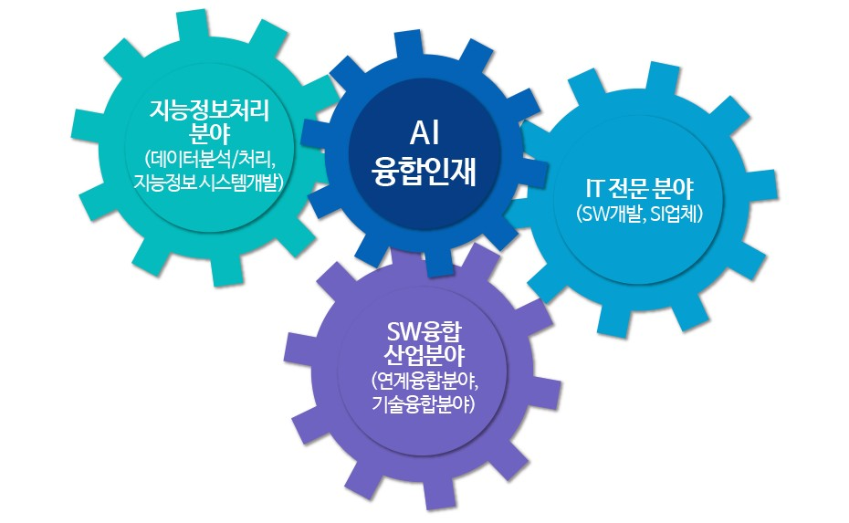

학과소개
4/22 2022
카테고리：졸업 후 진로
인공지능융합학과에서는 IT 기반 기술 및 SW 개발 방법을 기반으로 기술 및 산업간 기술 융합을 수행할 수 있는 인재를 양성한다. 인공지능융합학과를 졸업할 경우 IT 전문 분야, 지능정보처리 분야, 소프트웨어 기술을 활용한 산업간 기술 융합 분야에 진출할 수 있다.
IT 전문 분야에서는 프로그래머, 시스템 분석 및 설계자, IT전문업체, 소프트웨어 개발 업체, 시스템 개발 업체 등에 종사할 수 있다. 지능정보처리 분야에서 의미 있는 정보를 찾아 분석하고 발전에 기여할 수 있는 방안을 내놓을 수 있는 데이터 분석가, 데이터 분석 및 처리 전문가, 지능 정보 시스템 개발 분야에 종사할 수 있다. 소프트웨어 개발 이론 뿐만 아니라 창의적 사고를 바탕으로 타 기술 및 타 학문과의 연계를 통해 융합 소프트웨어 개발자, 융합 시스템 설계자, 스마트 농·생명, 스마트 헬스케어, 스마트금융, 콘텐츠미디어와 같은 소프트웨어 융합 분야에 종사할 수 있다.
